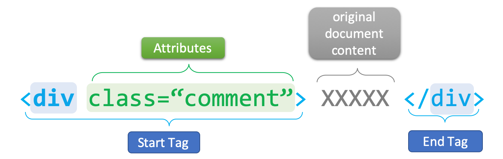
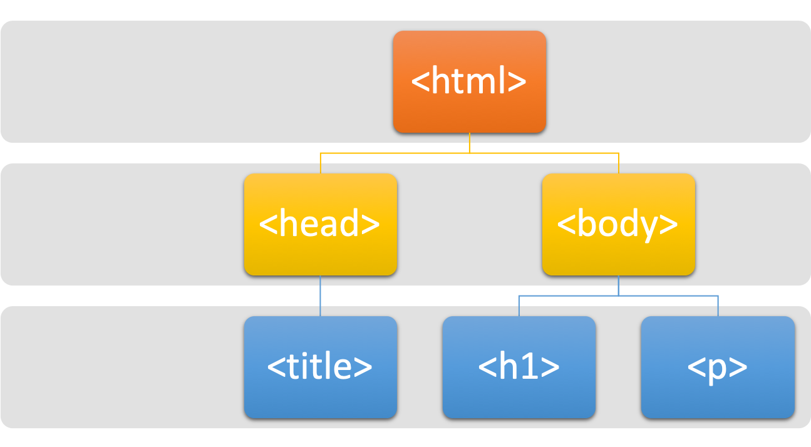
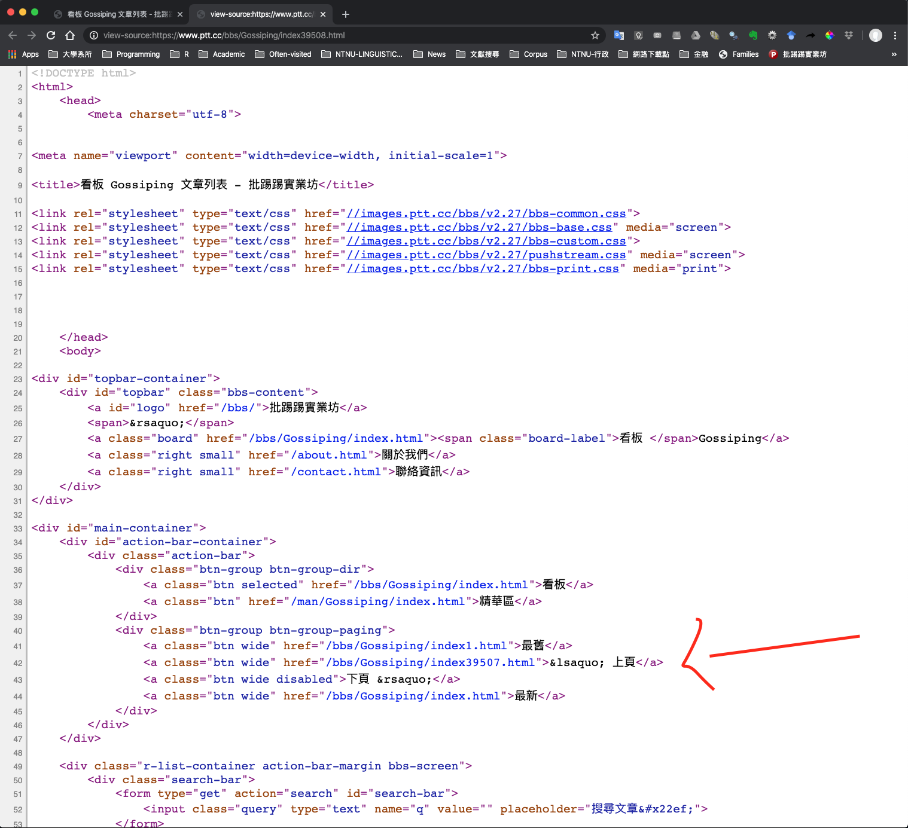
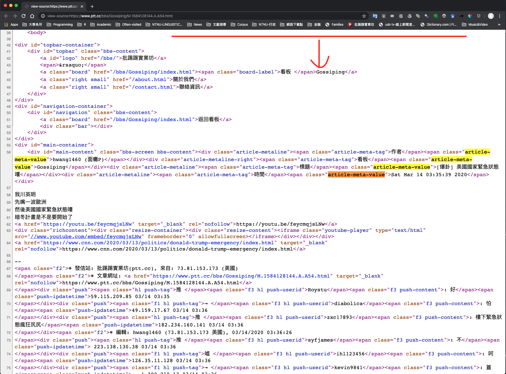
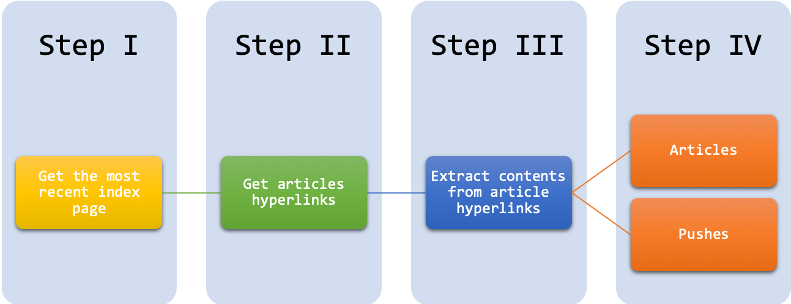

Chapter 3 Creating Corpus
Linguistic data are important to linguists. Data usually tell us something we don’t know, or something we are not sure of. In this chapter, we will look at a quick way to extract linguistic data from web pages, which is by now undoubtedly the largest source of textual data available.
While there are many existing text data collections (cf. Structured Corpus and XML), chances are that sometimes you still need to collect your own data for a particular research question. But please note that when you are creating your own corpus for specific research questions, always pay attention to the three important criteria: representativeness, authenticity, and size.
Following the spirit of tidy , we will mainly do our tasks with the libraries of tidyverse and rvests.
If you are new to tidyverse R, please check its official webpage for learning resources.
## Uncomment the following line for installation
# install.packages(c("tidyverse", "rvest"))
library(tidyverse)
library(rvest)3.1 HTML Structure
The HyperText Markup Language, or HTML is the standard markup language for documents designed to be displayed in a web browser.
3.1.1 HTML Syntax
To illustrate the structure of the HTML, please download the sample html file from: demo_data/data-sample-html.html and first open it with your browser.
<!DOCTYPE html>
<html>
<head>
<title>My First HTML </title>
</head>
<body>
<h1> Introduction </h1>
<p> Have you ever read the source code of a html page? This is how to get back to the course page: <a href="https://alvinntnu.github.io/NTNU_ENC2036_LECTURES/", target="_blank">ENC2036</a>. </p>
<h1> Contents of the Page </h1>
<p> Anything you can say about the page.....</p>
</body>
</html>An HTML document includes several important elements (cf. Figure 3.1):
DTD: document type definition which informs the browser about the version of the HTML standard that the document adheres to (e.g.,<!DOCTYPE HTML>)element: the combination of start tag, content, and end tag (e.g,<title>My First HTML</title>)tag: named braces that enclose the content and define its structural function (e.g.,title,body,p)attribute: specific properties of the tag, which are often placed in the start end of the element (e.g.,<a href= "index.html"> Homepage </a>). They are expressed asname = "value"pairs.

Figure 3.1: Syntax of An HTML Tag Element
An HTML document starts with the root element <html>, which splits into two branches, <head> and <body>.
- Most of the webpage textual contents would go into the
<body>part. - Most of the web-related codes and metadata (e.g., javascripts, CSS) are often included in the
<head>part.
All elements need to be strictly nested within each other in a well-formed and valid HTML file, as shown in Figure 3.2.

Figure 3.2: Tree Structure of An HTML Document
3.1.3 CSS
Cascading Style Sheet (CSS) is a language for describing the layout of HTML and other markup documents (e.g., XML).
HTML + CSS is by now the standard way to create and design web pages. The idea is that CSS specifies the formats/styles of the HTML elements. The following is an example of the CSS:
div.warnings {
color: pink;
font-family: "Arial"
font-size: 120%
}
h1 {
padding-top: 20px
padding-bottom: 20px
}You probably would wonder how to link a set of CSS style definitions to an HTML document. There are in general three ways: inline, internal and external. You can learn more about this in W3School.com.
Here I will show you an example of the internal method. Below is a CSS style definition for <h1>.
h1 {
color: red;
margin-bottom: 2em;
}We can embed this within a <style>...</style> element. Then you put the entire <style> element under <head> of the HTML file you would like to style.
<style>
h1 {
color: red;
margin-bottom: 1.5em;
}
</style>After you include the <style> in the HTML file, refresh the web page to see if the CSS style works.
3.2 Web Crawling
In the following demonstration, the text data scraped from the PTT forum is presented as it is without adjustment. Therefore, the language on PTT may strike some readers as profane, vulgar or even offensive.
When scraping data from PTT, it is important to manage the frequency of your requests. If the website detects an unusually high volume of automated traffic from a single source, it may temporarily or permanently block your IP address to prevent server strain. To avoid being flagged as a bot, you should implement small delays between your requests and avoid running large-scale scraping tasks too rapidly. Ensuring your script mimics natural browsing behavior will help maintain your access to the site for future data collection.
In this tutorial, let’s assume that we like to scrape texts from PTT Forum. In particular, we will demonstrate how to scrape texts from the Gossiping board of PTT.
- First, we create an
session()(This process is similar to opening a web browser and navigating directly to a specific page.)
gossiping.session <- session(ptt.url)
gossiping.session <- session(
ptt.url,
config = httr::add_headers(
Cookie = "over18=1",
`User-Agent` = "Mozilla/5.0"
)
)
gossiping.session$response$url[1] "https://www.ptt.cc/bbs/Gossiping/index.html"If you use your browser to view PTT Gossiping page, you would see that you need to go through the age verification before you can enter the content page. So, our first job is to pass through this age verification.
Check the current url of your gossiping.session:
[1] "https://www.ptt.cc/bbs/Gossiping/index.html"If the session’s current url is NOT https://www.ptt.cc/bbs/Gossiping/index.html, we may need to get pass the age verification page before you can access the bulletin posts.
We can extract the age verification form from the current page (form is also a defined HTML element)
Then we automatically submit an yes to the age verification form in the earlier created session() and create another session.
Now our html session, i.e., gossiping, should be on the front page of the Gossiping board.
Most browsers come with the functionality to inspect the page source (i.e., HTML). This is very useful for web crawling. Before we scrape data from the webpage, we often need to inspect the structure of the web page first. Most importantly, we need to know (a) which HTML elements, or (b) which particular attributes/values of the HTML elements we are interested in .

- Next we need to find the most recent index page of the board
# Decide the number of index pages ----
page.latest <- gossiping.session %>%
html_nodes("a") %>% # extract all <a> elements
html_attr("href") %>% # extract the attributes `href`
str_subset("index[0-9]{2,}\\.html") %>% # find the `href` with the index number
str_extract("[0-9]+") %>% # extract the number
as.numeric()
page.latest[1] 38939- On the most recent index page, we need to extract the hyperlinks to the articles
## Retreive links
link <- str_c(ptt.url, "/index", page.latest, ".html")
links.article <- gossiping.session %>%
session_jump_to(link) %>% # move current session to the most recent index page
html_nodes("a") %>% # extract article <a>
html_attr("href") %>% # extract article <a> `href` attributes
str_subset("[A-z]\\.[0-9]+\\.[A-z]\\.[A-z0-9]+\\.html") %>% # extract links
str_c("https://www.ptt.cc",.)
## inspect article links of the page
links.article [1] "https://www.ptt.cc/bbs/Gossiping/M.1772408087.A.2BA.html"
[2] "https://www.ptt.cc/bbs/Gossiping/M.1772408171.A.A1A.html"
[3] "https://www.ptt.cc/bbs/Gossiping/M.1772408188.A.0A3.html"
[4] "https://www.ptt.cc/bbs/Gossiping/M.1772408341.A.D88.html"
[5] "https://www.ptt.cc/bbs/Gossiping/M.1772408372.A.EE3.html"
[6] "https://www.ptt.cc/bbs/Gossiping/M.1772408393.A.7B2.html"
[7] "https://www.ptt.cc/bbs/Gossiping/M.1772408487.A.A9A.html"
[8] "https://www.ptt.cc/bbs/Gossiping/M.1772408509.A.2BD.html"
[9] "https://www.ptt.cc/bbs/Gossiping/M.1772408660.A.B89.html"
[10] "https://www.ptt.cc/bbs/Gossiping/M.1772408732.A.5EA.html"
[11] "https://www.ptt.cc/bbs/Gossiping/M.1772408855.A.C43.html"
[12] "https://www.ptt.cc/bbs/Gossiping/M.1772408889.A.ED3.html"
[13] "https://www.ptt.cc/bbs/Gossiping/M.1772408952.A.B83.html"
[14] "https://www.ptt.cc/bbs/Gossiping/M.1772409091.A.844.html"
[15] "https://www.ptt.cc/bbs/Gossiping/M.1772409115.A.F59.html"
[16] "https://www.ptt.cc/bbs/Gossiping/M.1772409388.A.B5E.html"
[17] "https://www.ptt.cc/bbs/Gossiping/M.1772409554.A.CBF.html"
[18] "https://www.ptt.cc/bbs/Gossiping/M.1772409637.A.8D2.html"
[19] "https://www.ptt.cc/bbs/Gossiping/M.1772409789.A.1CC.html"
[20] "https://www.ptt.cc/bbs/Gossiping/M.1772409947.A.87A.html"- Next step is to scrape texts from each article hyperlink. Let’s consider one link first.
## check first article link
article.url <- links.article[1]
## move current session to the first article link
temp.html <- gossiping.session %>%
session_jump_to(article.url)- Now the
temp.htmlis a session on the article page. Because we are interested in the metadata and the contents of each article, now the question is: where are they in the HTML? We need to go back to the source page of the article HTML again:

Figure 3.3: HTML of an Article Page
Inspecting the article’s HTML reveals a clear structure for the data:
- All relevant information is housed within the
<div id="main-content">container. - Inside this section, article metadata – such as the author or date – is stored specifically within
<span>tags using thearticle-meta-valueclass (e.g.,<span class="article-meta-value"> ... </span>) - The main body of the text is located directly within the
<div id="main-content">block, alongside these metadata elements.
- All relevant information is housed within the
- Now we are ready to extract the metadata of the article.
# Extract article metadata
article.header <- temp.html %>%
html_nodes("span.article-meta-value") %>% # get <span> of a particular class
html_text()
article.header[1] "james7923 (詹姆士Q)"
[2] "Gossiping"
[3] "[新聞] 主謀兼幫兇！台獨清單雙入榜沈伯洋自嘲二"
[4] "Mon Mar 2 07:34:42 2026" The metadata of each PTT article in fact includes four pieces of information: author, board name, title, post time. The above code retrieves directly the values of these metadata.
We can retrieve the tags of these metadata values as well:
temp.html %>%
html_nodes("span.article-meta-tag") %>% # get <span> of a particular class
html_text()[1] "作者" "看板" "標題" "時間"- From the
article.header, we are able to extract theauthor,title, andtime stampof the article.
article.author <- article.header[1] %>% str_extract("^[A-z0-9_]+") # athuor
article.title <- article.header[3] # title
article.datetime <- article.header[4] # time stamp
article.author[1] "james7923"[1] "[新聞] 主謀兼幫兇！台獨清單雙入榜沈伯洋自嘲二"[1] "Mon Mar 2 07:34:42 2026"- Now we extract the main contents of the article
article.content <- temp.html %>%
html_nodes( # article body
xpath = '//div[@id="main-content"]/node()[not(self::div|self::span[@class="f2"])]'
) %>%
html_text(trim = TRUE) %>% # extract texts
str_c(collapse = "") # combine all lines into one
article.content[1] "1.媒體來源:\nNOWnews今日新聞\n\n2.記者署名:\n蕭宇珊\n\n3.完整新聞標題:\n主謀兼幫兇！台獨清單雙入榜沈伯洋自嘲二刀流 酸國台辦蹭棒球\n\n4.完整新聞內文:\n\n國台辦官網近期更新「台獨」清單，立委沈伯洋2024年10月被列入「台獨頑固分子」後，\n如今又出現在「台獨打手幫兇」名單中，除了沈伯洋以外，還有民進黨立委黃捷、網紅史\n書華、檢察官陳舒怡等人都入列。被國台辦雙重認證的沈伯洋在臉書發文，直言自己同時\n被列為主謀與幫兇，簡直成了「台獨二刀流」，反諷國台辦是不是想蹭棒球。\n\n根據國台辦更新的頁面顯示，台獨頑固分子一共有14人，包括副總統蕭美琴、總統府資政\n蘇貞昌、國防部長顧立雄、立委王定宇等，而沈伯洋不僅位列頑固分子名單，就連內政部\n長劉世芳、聯電創辦人曹興誠也同樣出現在兩份名單上，引起一波討論。\n\n沈伯洋發文，自嘲自己是1;32[m「台獨二刀流」，支持者也湧入支持，把台獨黑名單當成戰功勳章留言：「恭喜！」、「這下頭銜又更長了，台灣人最高榮譽都給你了」，還有人順著棒\n球梗直呼「可以封你為台獨大谷翔平了」、有人留言反問：「如果三刀流是不是就蹭航海\n王？」\n\n根據國台辦先前發布的《關於依法懲治「台獨」頑固分子分裂國家、煽動分裂國家犯罪的\n意見》，內容提到中國可以對名單成員進行審判以外，成員家屬也會被永久禁止進入中國\n大陸、香港及澳門，關聯企業或金主也會面臨切斷金流、沒收財產等經濟制裁。\n\n\n5.完整新聞連結 (或短網址)不可用YAHOO、LINE、MSN等轉載媒體:https://www.nownews.com/news/67909176.備註:--"XPath (or XML Path Language) is a query language which is useful for addressing and extracting particular elements from XML/HTML documents. XPath allows you to exploit more features of the hierarchical tree that an HTML file represents in locating the relevant HTML elements. For more information, please see Munzert et al. (2014), Chapter 4.
The XPath '//div[@id="main-content"]/node()[not(self::div|self::span[@class="f2"])]' acts as a filter to extract the main text of an article while stripping away unwanted metadata or structural tags.
- First,
//div[@id="main-content"]locates the primary container holding the article. - The
/node()command then selects every item directly inside that container, including raw text and HTML tags. - Finally, the filter
[not(self::div|self::span[@class="f2"])]instructs thehtml_nodes()to ignore any<div>elements or<span>elements labeled with the class"f2".
In short, the XPath identifies the nodes under <div id = "main-content">, but excludes their sister nodes that are <div> or <span class="f2">.
These children elements <div> or <span class="f2"> of the <div id = "main-content"> include the push comments (推文) of the article, which are not the main content of the article.
- Now we can combine all information related to the article into a data frame
article.table <- tibble(
datetime = article.datetime,
title = article.title,
author = article.author,
content = article.content,
url = article.url
)
article.table- Next we extract the push comments at the end of the article
{xml_nodeset (8)}
[1] <div class="push">\n<span class="f1 hl push-tag">噓 </span><span class="f3 ...
[2] <div class="push">\n<span class="f1 hl push-tag">噓 </span><span class="f3 ...
[3] <div class="push">\n<span class="f1 hl push-tag">噓 </span><span class="f3 ...
[4] <div class="push">\n<span class="hl push-tag">推 </span><span class="f3 hl ...
[5] <div class="push">\n<span class="f1 hl push-tag">→ </span><span class="f3 ...
[6] <div class="push">\n<span class="f1 hl push-tag">→ </span><span class="f3 ...
[7] <div class="push">\n<span class="f1 hl push-tag">→ </span><span class="f3 ...
[8] <div class="push">\n<span class="hl push-tag">推 </span><span class="f3 hl ...We then extract relevant information from each push nodes
article.push.- push types
- push authors
- push contents
# push tags
push.table.tag <- article.push %>%
html_nodes("span.push-tag") %>%
html_text(trim = TRUE) # push types (like or dislike)
push.table.tag[1] "噓" "噓" "噓" "推" "→" "→" "→" "推"# push authors
push.table.author <- article.push %>%
html_nodes("span.push-userid") %>%
html_text(trim = TRUE) # author
push.table.author[1] "u87803170" "s91026" "nosheep" "Tencc" "Tencc" "ivla8432"
[7] "jasin0425" "vasia" # push contents
push.table.content <- article.push %>%
html_nodes("span.push-content") %>%
html_text(trim = TRUE)
push.table.content[1] ": 紅孩兒"
[2] ": 有種就去中共國家阿 只會跑去歐洲裝行"
[3] ": 還有美國間諜啊"
[4] ": 他現在就是在賭中國不敢打才敢在那邊嘴"
[5] ": 但殊不知現代戰爭少這件事已經被美國打破了"
[6] ": 白癡一個"
[7] ": https://i.mopix.cc/7lOLnh.jpg"
[8] ": 拿紅抹紅二刀流，沒毛病" # push time
push.table.datetime <- article.push %>%
html_nodes("span.push-ipdatetime") %>%
html_text(trim = TRUE) # push time stamp
push.table.datetime[1] "93.118.43.92 03/02 07:35" "114.40.206.7 03/02 07:36"
[3] "61.224.54.69 03/02 07:40" "59.125.27.163 03/02 07:44"
[5] "59.125.27.163 03/02 07:45" "111.71.7.231 03/02 07:45"
[7] "111.82.46.1 03/02 07:51" "49.215.148.249 03/02 08:14"- Finally, we combine all into one Push data frame.
push.table <- tibble(
tag = push.table.tag,
author = push.table.author,
content = push.table.content,
datetime = push.table.datetime,
url = article.url)
push.table3.3 Functional Programming
It should now be clear that there are several routines that we need to do again and again if we want to collect text data in large amounts:
- For each index page, we need to extract all the article hyperlinks of the page.
- For each article hyperlink, we need to extract the article content, metadata, and the push comments.
So, it would be great if we can wrap these two routines into two functions.
3.3.1 extract_art_links()
extract_art_links(): This function takes an HTML sessionsessionand an index page of the PTT Gossipingindex_pageas the arguments and extract all article links from the index page. It returns a vector of article links.
extract_art_links <- function(index_page, session){
links.article <- session %>%
session_jump_to(index_page) %>%
html_nodes("a") %>%
html_attr("href") %>%
str_subset("[A-z]\\.[0-9]+\\.[A-z]\\.[A-z0-9]+\\.html") %>%
str_c("https://www.ptt.cc",.)
return(links.article)
}For example, we can extract all the article links from the most recent index page:
# Get index page
cur_index_page <- str_c(ptt.url, "/index", page.latest, ".html")
# Get all article links from the most recent index page
cur_art_links <-extract_art_links(cur_index_page, gossiping.session)
cur_art_links [1] "https://www.ptt.cc/bbs/Gossiping/M.1772408087.A.2BA.html"
[2] "https://www.ptt.cc/bbs/Gossiping/M.1772408171.A.A1A.html"
[3] "https://www.ptt.cc/bbs/Gossiping/M.1772408188.A.0A3.html"
[4] "https://www.ptt.cc/bbs/Gossiping/M.1772408341.A.D88.html"
[5] "https://www.ptt.cc/bbs/Gossiping/M.1772408372.A.EE3.html"
[6] "https://www.ptt.cc/bbs/Gossiping/M.1772408393.A.7B2.html"
[7] "https://www.ptt.cc/bbs/Gossiping/M.1772408487.A.A9A.html"
[8] "https://www.ptt.cc/bbs/Gossiping/M.1772408509.A.2BD.html"
[9] "https://www.ptt.cc/bbs/Gossiping/M.1772408660.A.B89.html"
[10] "https://www.ptt.cc/bbs/Gossiping/M.1772408732.A.5EA.html"
[11] "https://www.ptt.cc/bbs/Gossiping/M.1772408855.A.C43.html"
[12] "https://www.ptt.cc/bbs/Gossiping/M.1772408889.A.ED3.html"
[13] "https://www.ptt.cc/bbs/Gossiping/M.1772408952.A.B83.html"
[14] "https://www.ptt.cc/bbs/Gossiping/M.1772409091.A.844.html"
[15] "https://www.ptt.cc/bbs/Gossiping/M.1772409115.A.F59.html"
[16] "https://www.ptt.cc/bbs/Gossiping/M.1772409388.A.B5E.html"
[17] "https://www.ptt.cc/bbs/Gossiping/M.1772409554.A.CBF.html"
[18] "https://www.ptt.cc/bbs/Gossiping/M.1772409637.A.8D2.html"
[19] "https://www.ptt.cc/bbs/Gossiping/M.1772409789.A.1CC.html"
[20] "https://www.ptt.cc/bbs/Gossiping/M.1772409947.A.87A.html"3.3.2 extract_article_push_tables()
extract_article_push_tables(): This function takes an article linklinkas the argument and extracts the metadata, textual contents, and pushes of the article. It returns a list of two elements—article and push data frames.
extract_article_push_tables <- function(link){
article.url <- link
temp.html <- gossiping.session %>% session_jump_to(article.url) # link to the www
# article header
article.header <- temp.html %>%
html_nodes("span.article-meta-value") %>% # meta info regarding the article
html_text()
# article meta
article.author <- article.header[1] %>% str_extract("^[A-z0-9_]+") # athuor
article.title <- article.header[3] # title
article.datetime <- article.header[4] # time stamp
# article content
article.content <- temp.html %>%
html_nodes( # article body
xpath = '//div[@id="main-content"]/node()[not(self::div|self::span[@class="f2"])]'
) %>%
html_text(trim = TRUE) %>%
str_c(collapse = "")
# Merge article table
article.table <- tibble(
datetime = article.datetime,
title = article.title,
author = article.author,
content = article.content,
url = article.url
)
# push nodes
article.push <- temp.html %>%
html_nodes(xpath = "//div[@class = 'push']") # extracting pushes
# NOTE: If CSS is used, div.push does a lazy match (extracting div.push.... also)
# push tags
push.table.tag <- article.push %>%
html_nodes("span.push-tag") %>%
html_text(trim = TRUE) # push types (like or dislike)
# push author id
push.table.author <- article.push %>%
html_nodes("span.push-userid") %>%
html_text(trim = TRUE) # author
# push content
push.table.content <- article.push %>%
html_nodes("span.push-content") %>%
html_text(trim = TRUE)
# push datetime
push.table.datetime <- article.push %>%
html_nodes("span.push-ipdatetime") %>%
html_text(trim = TRUE) # push time stamp
# merge push table
push.table <- tibble(
tag = push.table.tag,
author = push.table.author,
content = push.table.content,
datetime = push.table.datetime,
url = article.url
)
# return
return(list(article.table = article.table,
push.table = push.table))
}#endfuncFor example, we can get the article and push tables from the first article link:
$article.table
# A tibble: 1 × 5
datetime title author content url
<chr> <chr> <chr> <chr> <chr>
1 Mon Mar 2 07:34:42 2026 [新聞] 主謀兼幫兇！台獨清單雙入榜沈伯洋自嘲二…… james… "1.媒體來… http…
$push.table
# A tibble: 8 × 5
tag author content datetime url
<chr> <chr> <chr> <chr> <chr>
1 噓 u87803170 : 紅孩兒 93.118.43.92… http…
2 噓 s91026 : 有種就去中共國家阿 只會跑去歐洲裝行 114.40.206.7… http…
3 噓 nosheep : 還有美國間諜啊 61.224.54.69… http…
4 推 Tencc : 他現在就是在賭中國不敢打才敢在那邊嘴 59.125.27.16… http…
5 → Tencc : 但殊不知現代戰爭少這件事已經被美國打破了 59.125.27.16… http…
6 → ivla8432 : 白癡一個 111.71.7.231… http…
7 → jasin0425 : https://i.mopix.cc/7lOLnh.jpg 111.82.46.1 … http…
8 推 vasia : 拿紅抹紅二刀流，沒毛病 49.215.148.2… http…3.3.3 Streamline the Codes
Now we can simplify our codes quite a bit:
# Get index page
cur_index_page <- str_c(ptt.url, "/index", page.latest, ".html")
# Scrape all article.tables and push.tables from each article hyperlink
cur_index_page %>%
extract_art_links(session = gossiping.session) %>%
map(extract_article_push_tables) -> ptt_data[1] 20- Finally, the last thing we can do is to combine all article tables from each index page into one; and all push tables into one for later analysis.
# Merge all article.tables into one
article.table.all <- ptt_data %>%
map(function(x) x$article.table) %>%
bind_rows
# Merge all push.tables into one
push.table.all <- ptt_data %>%
map(function(x) x$push.table) %>%
bind_rows
article.table.allThere is still one problem with the Push data frame. Right now it is still not very clear how we can match the pushes to the articles from which they were extracted. The only shared index is the url. It would be better if all the articles in the data frame have their own unique indices and in the Push data frame each push comment corresponds to a particular article index.
The following graph summarizes our work flowchart for PTT Gossipping Scraping:

3.5 Additional Resources
Collecting texts and digitizing them into machine-readable files is only the initial step for corpus construction. There are many other things that need to be considered to ensure the effectiveness and the sustainability of the corpus data. In particular, I would like to point you to a very useful resource, Developing Linguistic Corpora: A Guide to Good Practice, compiled by Martin Wynne. Other important issues in corpus creation include:
- Adding linguistic annotations to the corpus data (cf. Leech’s Chapter 2)
- Metadata representation of the documents (cf. Burnard’s Chapter 4)
- Spoken corpora (cf. Thompson’s Chapter 5)
- Technical parts for corpus creation (cf. Sinclair’s Appendix)
3.6 Final Remarks
- Please pay attention to the ethical aspects involved in the process of web crawling (esp. with personal private matters).
- If the website has their own API built specifically for one to gather data, use it instead of scraping.
- Always read the terms and conditions provided by the website regarding data gathering.
- Always be gentle with the data scraping (e.g., off-peak hours, spacing out the requests)
- Value the data you gather and treat the data with respect.
Exercise 3.1 Can you modify the R codes so that the script can automatically scrape more than one index page?
Exercise 3.2 Please utilize the code from Exercise 3.1 and collect all texts on PTT/Gossipings from 3 index pages. Please have the articles saved in PTT_GOSSIPING_ARTICLE.csv and the pushes saved in PTT_GOSSIPING_PUSH.csv under your working directory.
Also, at the end of your code, please also output in the Console the corpus size, including both the articles and the pushes. Please provide the total number of characters of all your PTT text data collected (Note: You DO NOT have to do the word segmentation yet. Please use the characters as the base unit for corpus size.)
Hint: nchar()
Your script may look something like:
# I define my own `scrapePTT()` function:
# ptt_url: specify the board to scrape texts from
# num_index_page: specify the number of index pages to be scraped
# return: list(article, push)
PTT_data <-scrapePTT(ptt_url = "https://www.ptt.cc/bbs/Gossiping", num_index_page = 3)
PTT_data$article %>% head[1] 23371Exercise 3.3 Please choose a website (other than PTT) you are interested in and demonstrate how you can use R to retrieve textual data from the site. The final scraped text collection could be from only one static web page. The purpose of this exercise is to show that you know how to parse the HTML structure of the web page and retrieve the data you need from the website.